About
I am an Applied Scientist II at AWS Agentic AI, where I work on
AgentCore Evaluation
and Strands Agents. I received my Ph.D. in
Computer Science and Engineering from POSTECH,
advised by Prof. Suha Kwak.
During my Ph.D., I collaborated with Ivan Laptev.
I also interned under and closely worked with Douglas Gray
at Amazon.
At AWS, I contribute to agent evaluation systems for production agentic AI, including
AgentCore Evaluation
and
Multimodal Evaluators.
Previously at Amazon Core Search, I contributed to
Amazon Lens Live
through multimodal retrieval, result verification, and MLLM-based re-ranking. During my internship,
I developed GENIUS, a generative retrieval
framework for universal multimodal search.
My research focuses on reliable agentic AI systems, agent evaluation, agentic retrieval,
multimodal retrieval, MLLM-based retrieval and ranking, long-horizon LLM agents,
agent memory and context management, and representation learning. I am also interested in
VLA robot learning, reinforcement learning, PPO, and GRPO.
Products
AWS Agentic AI
Core contributor to AgentCore Evaluation; co-led first-party evaluation model training and evaluation for agent evaluation.
Open-source agents
Core contributor for Multimodal Evaluators in Strands Evals.

Amazon Core Search
Contributed to multimodal retrieval, result verification, and MLLM-based re-ranking for real-time visual shopping search.
Experience
-

- Core contributor for Multimodal Evaluators in Strands Evals and AgentCore Evaluation.
- Co-led first-party evaluation model training and evaluation for agent evaluation.
-

- Contributed to multimodal retrieval, verification, and MLLM-based re-ranking for Amazon Lens Live.
-
- Worked with Douglas Gray to develop GENIUS, a generative retrieval framework for universal multimodal search; published at CVPR 2025.
Publications
International Conference
-
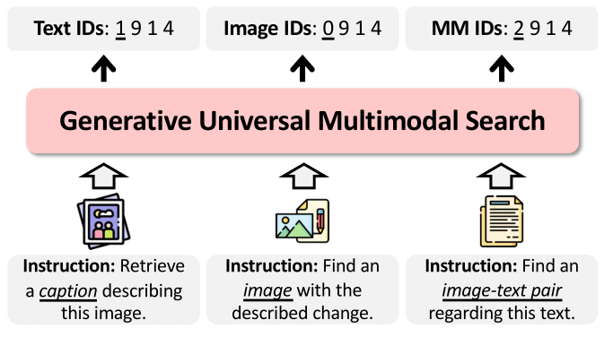
GENIUS: A Generative Framework for Universal Multimodal Search
Sungyeon Kim, Xinliang Zhu, Xiaofan Lin, Muhammet Bastan, Douglas Gray, Suha Kwak
CVPR 2025
-
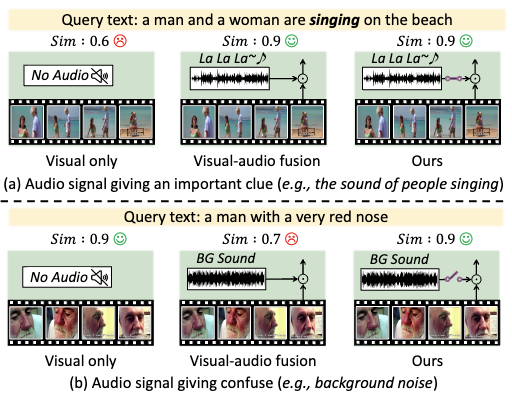
Learning Audio-guided Video Representation with Gated Attention for Video-Text Retrieval
Boseung Jeong, Jicheol Park, Sungyeon Kim, Suha Kwak
CVPR 2025Oral · 3.3%
-
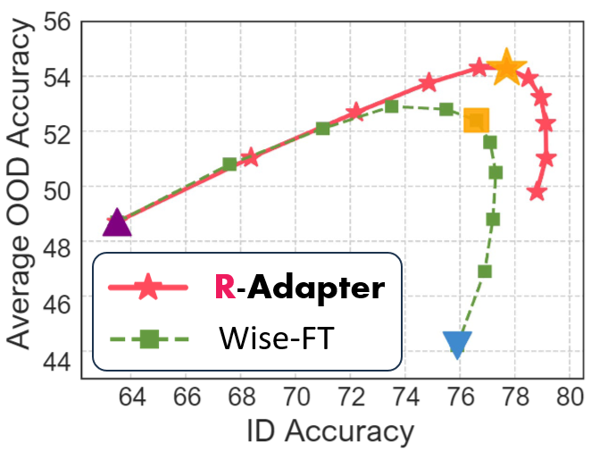
Efficient and Versatile Robust Fine-Tuning of Zero-shot Models
Sungyeon Kim, Boseung Jeong, Donghyun Kim, Suha Kwak
ECCV 2024
-
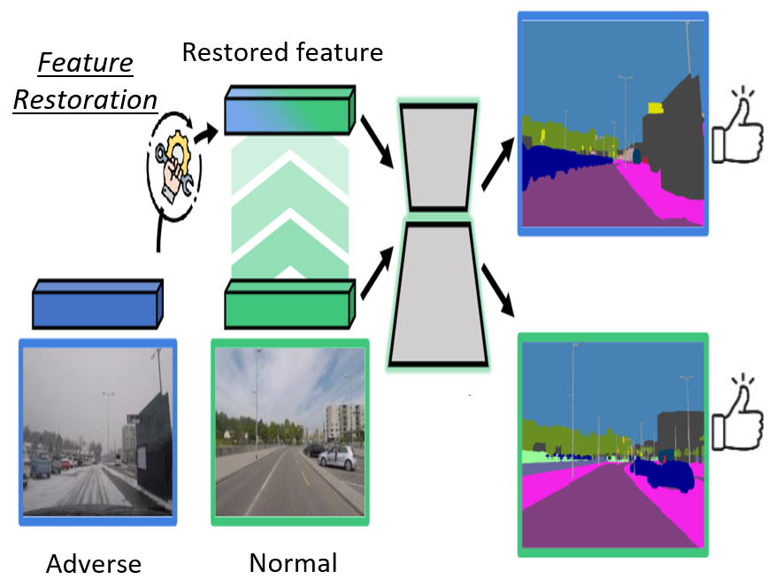
FREST: Improving Robustness of Semantic Segmentation via Source-free Domain Adaptation with Feature Restoration
Sohyun Lee, Namyup Kim, Sungyeon Kim, Suha Kwak
ECCV 2024
-
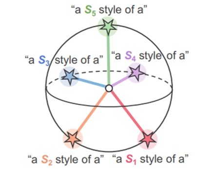
PromptStyler: Prompt-driven Style Generation for Source-free Domain Generalization
Junhyeong Cho, Gilhyun Nam, Sungyeon Kim, Hunmin Yang, Suha Kwak
ICCV 2023
-
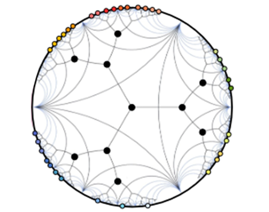
HIER: Metric Learning Beyond Class Labels via Hierarchical Regularization
Sungyeon Kim, Boseung Jeong, Suha Kwak
CVPR 2023Qualcomm Fellowship Finalist
-
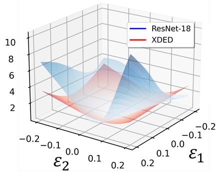
Cross-Domain Ensemble Distillation for Domain Generalization
Kyungmoon Lee, Sungyeon Kim, Suha Kwak
ECCV 2022
-

Combating Label Distribution Shift for Active Domain Adaptation
Sehyun Hwang, Sohyun Lee, Sungyeon Kim, Jungseul Ok, Suha Kwak
ECCV 2022IPIU / BK21 Best Paper
-
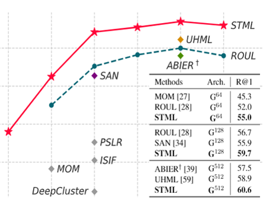
Self-Taught Metric Learning without Labels
Sungyeon Kim, Dongwon Kim, Minsu Cho, Suha Kwak
CVPR 2022BK21 Best Paper
-

Embedding Transfer with Label Relaxation for Improved Metric Learning
Sungyeon Kim, Dongwon Kim, Minsu Cho, Suha Kwak
CVPR 2021BK21 / IPIU Best Paper
-
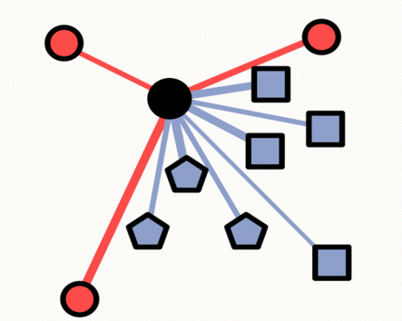
Proxy Anchor Loss for Deep Metric Learning
Sungyeon Kim, Dongwon Kim, Minsu Cho, Suha Kwak
CVPR 2020580+ citations
-

Deep Metric Learning Beyond Binary Supervision
Sungyeon Kim, Minkyo Seo, Ivan Laptev, Minsu Cho, Suha Kwak
CVPR 2019Oral · 5.58% · 140+ citations
Preprint
Technical Blog
-
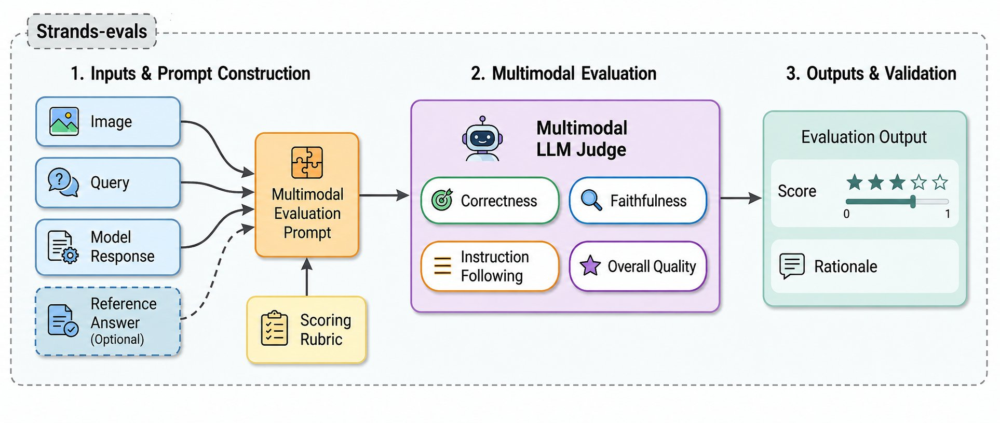
-
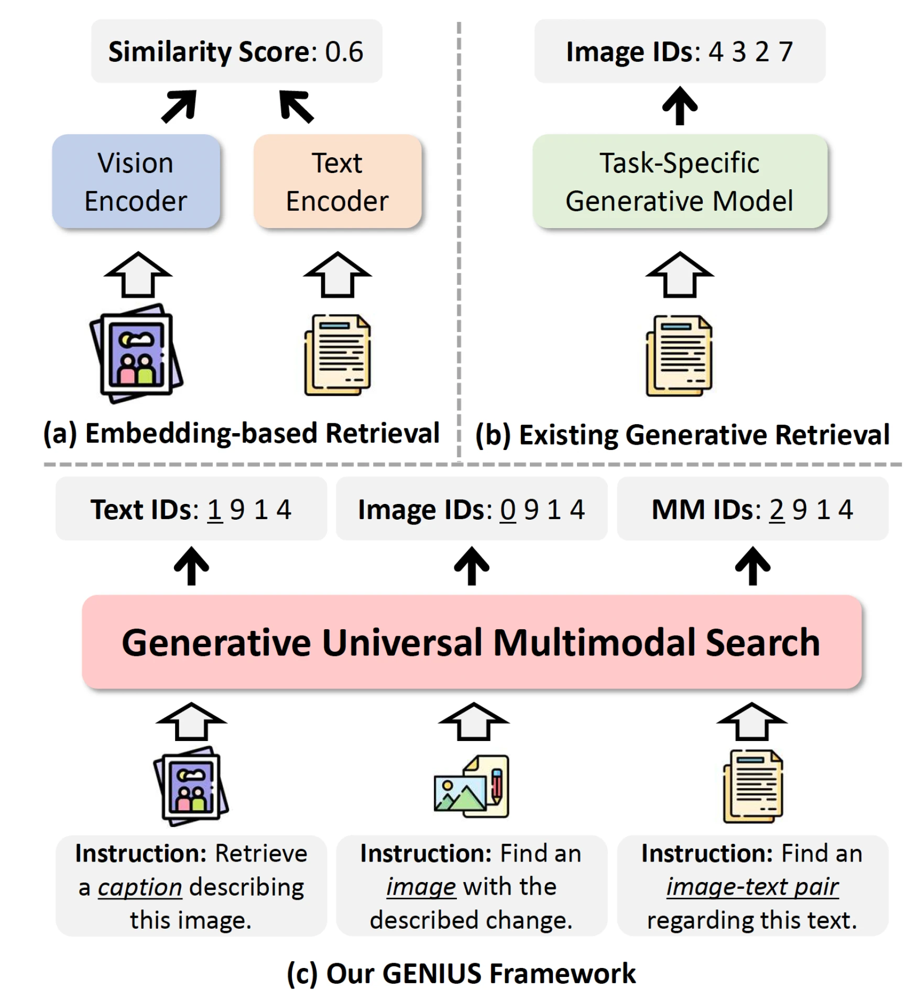
Professional Service
Conference Reviewer
CVPR, ICCV, ECCV, ICLR, ICML, NeurIPS, AAAI, ACCV
Journal Reviewer
IEEE TPAMI, IJCV
Patents
Rehabilitation program creation method for muscle treatment and providing apparatus
KR101648638B1, Republic of Korea